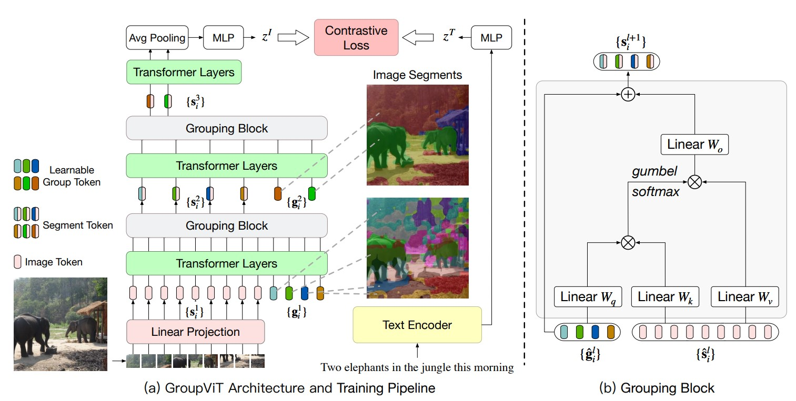

CLIP工作
2021 Learning Transferable Visual Models From Natural Language Supervision(CLIP)
学习自朱毅老师的
CLIP逐段精读。
贡献：
- （1）通过文本和图像的对比学习，模型学习到文本-图像对的匹配关系。
- （2）能够实现通过给定一张图像，在多个文本标签中选择出与图像最相关的文本。也可以实现给定一个文本，选择最符合相关的图像。
创新：
- 实现文本与图像的多模态学习。
- 实现实现无标签限制的图像分类，也可以实现无图像限制的文本-图像配对。前者可以用于图像中的物体识别，后者可以用于文本检索图像。
CLIP对比学习训练代码：
# image_encoder - ResNet 或者 Vision Transformer
# text_encoder - CBOW 或者 Text Transformer
# I[n, h, w, c] - 图像形状
# T[n, l] - 文本形状，l是序列长度
# W_i[d_i, d_e] - 图像的线性投射矩阵
# W_t[d_t, d_e] - 文本的线性投射矩阵
# t - learned temperature parameter
# 分别提取图像特征和文本特征
I_f = image_encoder(I) #[n, d_i]
T_f = text_encoder(T) #[n, d_t]
# 对两个特征进行线性投射，得到相同维度的特征，并进行l2归一化
I_e = l2_normalize(np.dot(I_f, W_i), axis=1)
T_e = l2_normalize(np.dot(T_f, W_t), axis=1)
# 计算缩放的余弦相似度：[n, n]
logits = np.dot(I_e, T_e.T) * np.exp(t)
# 对称的对比学习损失：等价于N个类别的cross_entropy_loss
labels = np.arange(n) # 对角线元素的labels
loss_i = cross_entropy_loss(logits, labels, axis=0)
loss_t = cross_entropy_loss(logits, labels, axis=1)
loss = (loss_i + loss_t)/2
多模态在分割的应用
2022 ICLR Language-driven semantic segmentation(LSeg)
学习自朱毅老师的逐段精读。
贡献：
- 将
CLIP的原始文本编码器作为需分割的物体标签的文本编码器，以充分提取文本特征。 - 将文本特征与图像特征通过矩阵相乘融合得到多模态特征，上采样后与
Ground-truth在像素级使用cross entropy loss进行训练。 - 测试时可以实现，根据需要分割的对象的文本标签，分割特定图像的内容。
创新：
- 一篇把
CLIP模型运用到分割任务且有效果的工作。 - 采用监督学习的方式训练，而不是对比学习去训练，也是为了更好地与特定分割任务适应。
不足：
- 依然是有监督学习，目标函数不是对比学习的目标函数。
- 文本特征只是用于融合多模态特征，并没有提供监督信号。
- 依然依赖于手工标注
segmentation mask。
（可以做识别物体位置的实践）
2022 CVPR GroupViT:Semantic Segmentation Emerges from Text Supervision(GroupViT)

学习自朱毅老师的逐段精读。
这篇是分割采用无监督学习的思路。主要使用的是分割中的
Grouping思想。展开来讲，Grouping将图像分割做为一种聚类任务，首先在图像确定聚类中心点，然后在模型训练的过程中，不断学习聚类中心周围像素点与聚类中心的相互关系，将与聚类中心相关的像素点并入该聚类中心的Group中。
贡献：
- 使用了文本作为监督信号训练分割任务，不再依赖人工标注的图像
Ground-Truth。 - 使用
Vision Transformer作为图像编码器。在每个Transformer层的输入tokens中加入若干个group tokens，这些group tokens实际上就是预先设想的聚类中心数，也就是猜测的图像有哪些物体类别。经过多个Transformer Layer，Image tokens和这几个group tokens之间的关系被自注意力不断建模与学习。与特定聚类中心接近的image tokens，其特征也越接近该group token的特征。 - 多个
Transformer层后跟一个Grouping Block层。Grouping Block的本质是一个交叉注意力机制，将Image tokens并入所属的Group tokens。每个Grouping Block都将总tokens数降低，因此也减小了计算成本。 - 使用对比学习的方式进行训练，带监督信号的文本被编码后的特征与最后的图像
tokens特征两者交叉熵损失。
创新：
- 首先使用了文本标注分割的
Ground-Truth，不再依赖繁琐的手工标注。
不足：
- 只能分割特定数量的类别，无法分割任意数量的物体。测试时，必须指定分割物体的数目，最后得到模型输出的
tokens与文本标签进行余弦相似度的计算，确定分割物体的文本标签。 - 训练中没有侧重语义信息，仅训练出了较好的分割能力。
（测试时，模型输出了两个token，我们指定分割物体的文本标签有table、dog...potted plant，于是可以使用余弦相似度计算得到一个相似度矩阵。对每行取最大的值，对应的文本标签即为该token的类别）
多模态在检测的应用
2022 CVPR Grounded Language-Image Pre-training(Glip)
学习自朱毅老师的逐段精读。
与常规目标检测任务相关的一个任务是
Vision Grounding。具体是根据提供的文本，在图片中找到文本中出现的物体的位置。
贡献：
- 参考
CLIP范式，将图像的Bounding box的region输入图像编码器，将提供的文本输入文本编码器，最后得到每个Bounding box与单词的相似度矩阵。在相似度矩阵上与Ground-Truth的相似度矩阵求定位损失Localization Loss和分类损失Alignment Loss即可完成训练。 - 为了更加充分地学习
Bounding box和文本的Joint Feature，也就是多模态特征。在最后的特征相似度计算前，使用交叉注意力对图像特征和文本特征进行多层交互学习，即Deep Fusion。
创新：
- 使用
Deep Fusion技术以辅助学习多模态特征。 - 将
Gounding任务与目标检测任务很好地结合，并借鉴CLIP的思想做大规模数据的预训练，成功取得了很好的Zero-shot效果。